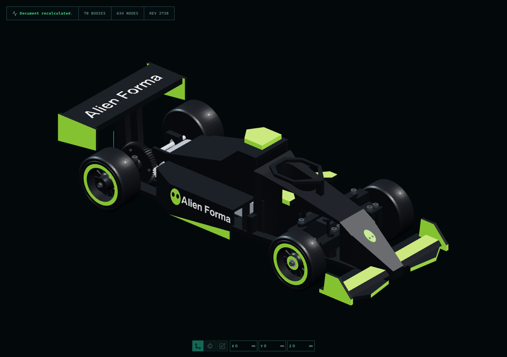
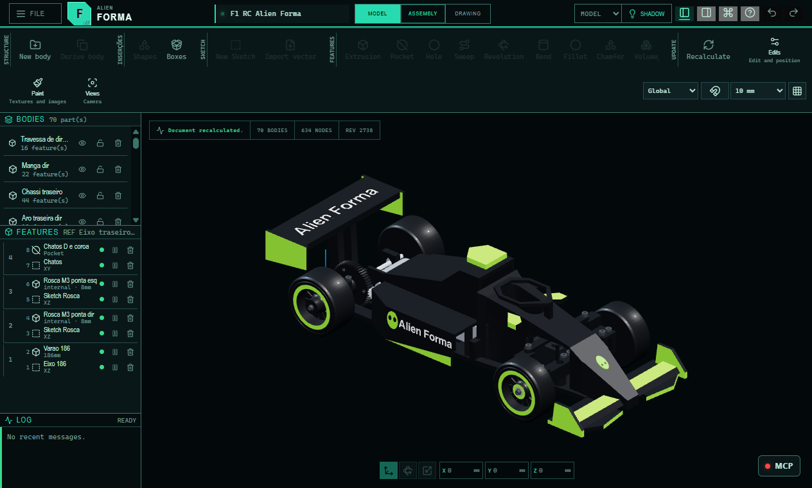
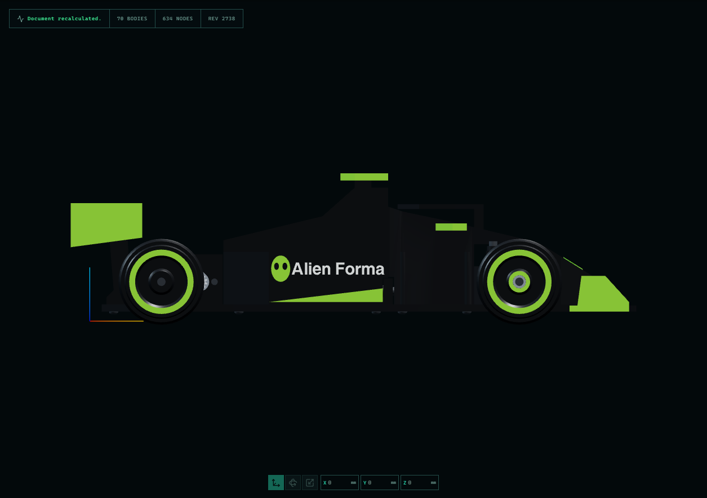
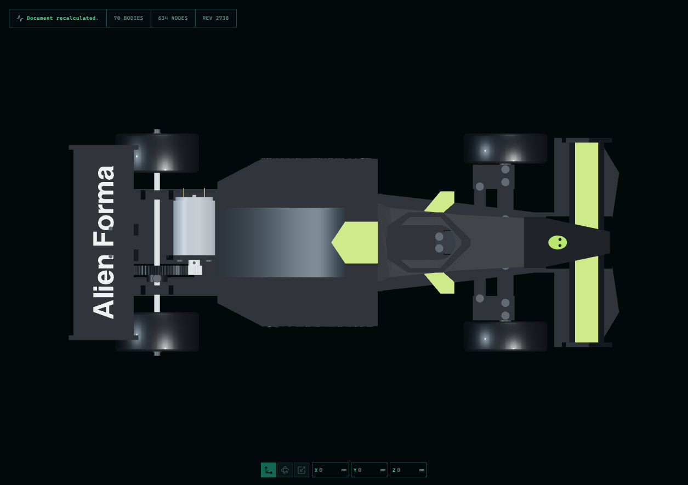
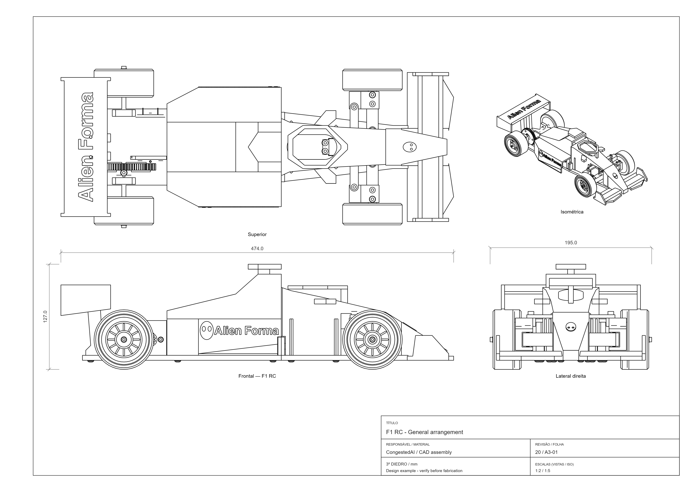
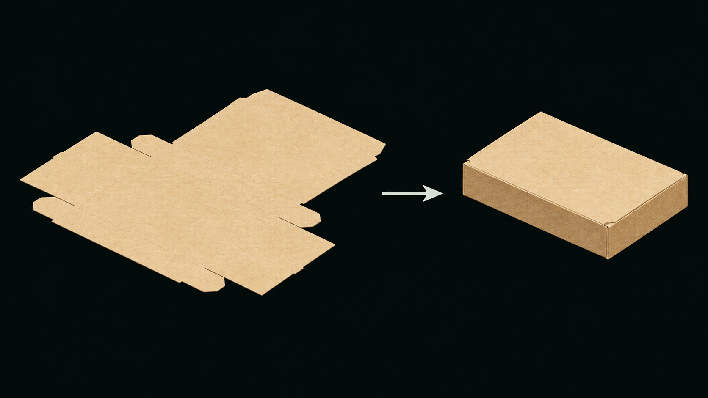
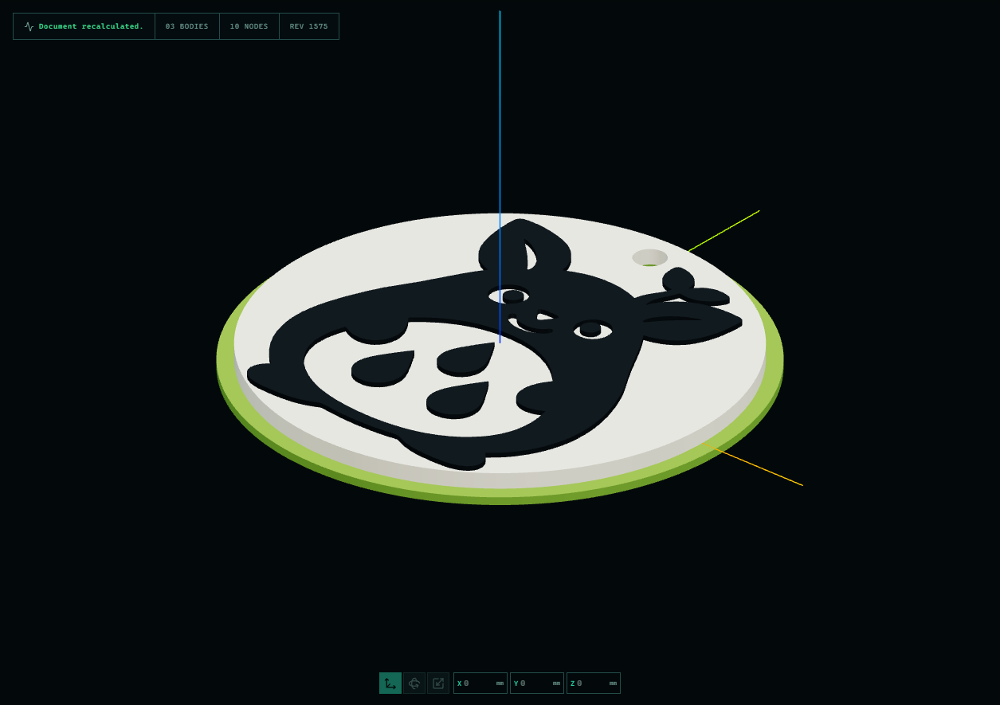
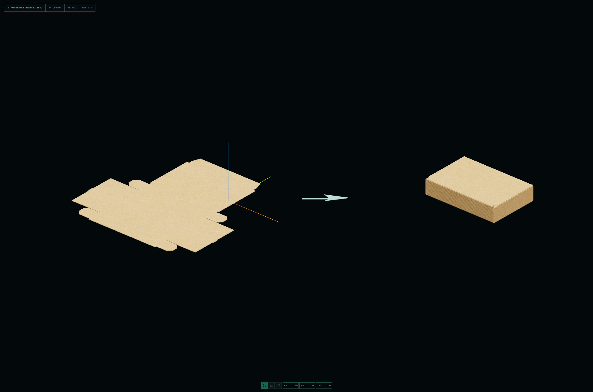
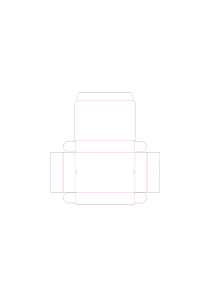

ALIEN FORMAPARAMETRIC CAD
Turn ideas into editable parts.
Sketch, model, paint and explore textures in a local workspace. Connect compatible AI assistants through MCP when you want another way to work with your models.
Free for personal, non-commercial use. Commercial-use terms.

01 / THE APPLICATION
Keep the shape editable.

Build
Work with sketches, solid operations and a parametric feature history.
Finish
Explore painting, image textures and materials alongside the model.
Inspect
Use available geometry checks, captures and exports to assess the result.
This is a preview. Tools and complex-model behavior have known limitations; read the release notes before updating.
FROM MODEL TO SHEET
Check it from every view.



MORE WAYS TO MAKE
Boxes, folds and a little character.




02 / AI + MCP
Give your assistant
tools to work with.
MCP lets a compatible client discover Alien Forma’s available tools, inspect project state, make supported edits and capture views for checking the result.
The integration is not tied to a single AI model. Not every interface tool is exposed through MCP, and an assistant’s output still needs verification.
Configuration, permissions and limitations ↗- 01
Install & open
The desktop edition can expose its visible window. An isolated browser session requires Chrome or Chromium.
- 02
Grant a project folder
Configure your client with a dedicated workspace and inspect the available tools.
- 03
Create & verify
Watch native MCP activity, then inspect returned identifiers, revisions, captures and geometry.
03 / GET ALIEN FORMA
Choose your workspace.
Windows — Microsoft Store
Current version: 0.6.9.0 for Windows 10/11 x64. Install and manage updates through Microsoft Store.
Download from Microsoft Store ↗Prefer the portable edition? GitHub portable: 0.6.9 preview ↗. No Node.js installation is needed. Preserve the adjacent Forma-data folder when updating.
The GitHub portable is unsigned and may trigger Windows SmartScreen. Store availability does not sign the separate portable download. Compare its SHA-256 with the release manifest.
Install with a command
GitHub preview 0.6.9-preview.20261106. For macOS, Linux and Windows with Node.js 22.12 or newer. No npm account is required.
npm exec --yes --package=https://github.com/congestedai/Forma/releases/download/v0.6.9-preview.20261106/Forma-cli.tgz -- formaKeep the terminal open while using the app. The short npm registry package has not been published. Store installation does not add the CLI; see the MCP guide for setup.
Release channels — updated 6 November 2026: new preview builds will be published on GitHub first; Store updates follow Microsoft's review and may arrive later. Microsoft Store offers 0.6.9.0. GitHub offers 0.6.9 Preview. Compare version numbers and release notes before updating. Store approval does not validate every CAD tool or establish a new Stable channel. Channel guide ↗
Your interface language
English · Português · Español · Deutsch · Français · 日本語 · Русский · 简体中文
Detected automatically, or selected in File → Preferences. Language packs are local assets.
04 / KEEP IT EVOLVING
Made independently.
Supported together.
Alien Forma is developed by CongestedAI with help from AI tools and open-source libraries. The original application code is private; third-party components retain their own licenses and credits.
Contributions fund development. Personal, non-commercial use is free. Commercial use requires a contribution of at least US$1 within the last 12 months, covering the entire company under the full terms.
Contribute US$1 to support Alien Forma ↗Patreon memberships are monthly and optional. Everyone gets the same CAD tools. Downloadable theme packs are included in the US$5 and US$40 tiers.